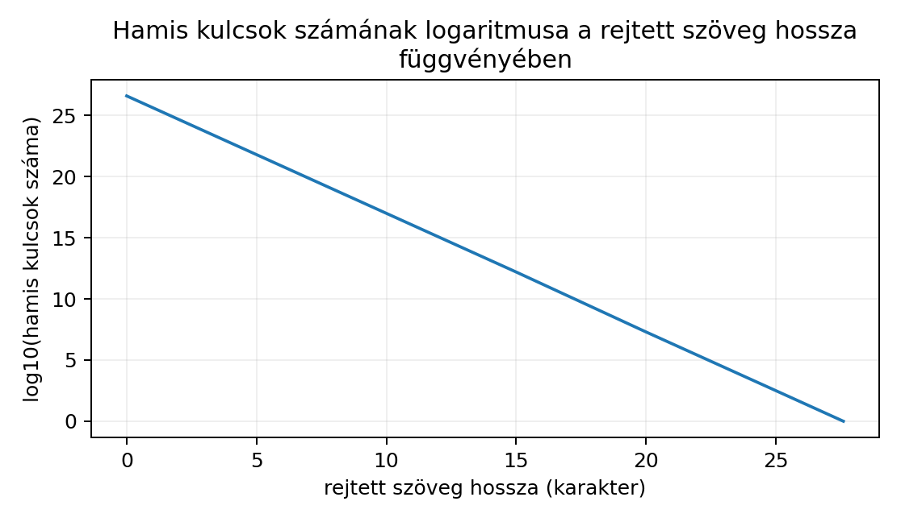

A klasszikus rejtjelek – például az eltolásos, a helyettesítéses vagy a Vigenère-rejtjel – véges számú kulcsot használnak. Ha egy támadó rejtett szöveget fog el, megpróbálhatja az összes lehetséges kulcsot végigpróbálni. Rövid rejtett szöveg esetén azonban sok kulcs is értelmes nyílt szöveget adhat; a támadó nem tudja eldönteni, melyik az igazi. Ahogy egyre több rejtett szöveget gyűjt, a nyelv szabályszerűsége, azaz redundanciája egyre inkább kizárja a hamis kulcsokat. Shannon egyértelműségi távolsága azt a rejtettszöveg-hosszat becsüli meg, amelynél a megfejtés információs értelemben egyértelművé válik. Ez az elmélet magyarázza, miért törhetők fel a klasszikus rejtjelek elegendő adattal, és miért veszélyes a tömörítés titkosítás előtt.
Tekintsünk egy angol szövegre alkalmazott általános helyettesítéses rejtjelet, amelynek kulcstere permutációból áll. Ha a rejtett szöveg mindössze egyetlen betű, a támadó mind a kulcsot lehetségesnek találhatja, hiszen bármely kulcs adhat valamilyen betűt. Ha azonban a rejtett szöveg 10 karakter hosszú, a lehetséges nyílt szövegek közül már csak kevés lesz értelmes angol szöveg; a kulcsok nagy része értelmetlen betűhalmazt ad. Az ábra szemlélteti, hogyan csökken a hamis kulcsok várható száma a rejtett szöveg hosszával.

A görbe logaritmikus skálán egyenletesen csökken, és kb. 28 karakternél éri el a nullát (1 hamis kulcs alá): elegendő rejtett szöveg után a hamis kulcsok várható száma 1 alá csökken.
Definíció (kulcs-ekvivokáció). Legyen az üzenettér, a rejtettszöveg-tér, a kulcstér. A kulcs bizonytalanságát a rejtett szöveg megfigyelése után a feltételes entrópia méri. Ezt nevezzük kulcs-ekvivokációnak. Minél kisebb ez az érték, annál kevésbé bizonytalan a támadó a kulcsban.
Definíció (redundancia). Legyen az üzenetforrás ábécéje , . Ha a forrás karakterenkénti entrópiarátája (nyelvi entrópiája) (ez nem azonos a Entrópia és Shannon információelmélete alfejezet min-entrópiájával, amelyet ott jelölt), akkor a maximális entrópia bit/karakter. A redundancia: A redundancia azt méri, hogy a nyelv átlagosan hány bitnyi „fölösleges” információt hordoz karakterenként. Az angol nyelvre a szokásos becslés bit/karakter maximális entrópia, míg a tényleges entrópia nagyjából bit/karakter, tehát bit/karakter (ellenőrzési igény: ez Shannon klasszikus becslése, amely függ a korpusztól és a modelltől).
Definíció (egyértelműségi távolság). Az egyértelműségi távolság (unicity distance) az a legkisebb rejtettszöveg-hossz, amelynél a hamis kulcsok várható száma 1 alá csökken, azaz ahol az első szimbólumból álló rejtett szöveg.
Állítás. Ha a kulcsokat egyenletesen választjuk, és a hamis kulcsok által adott nyílt szövegek függetlennek tekinthetők, akkor a hamis kulcsok várható száma rejtett szöveg karakter esetén és az egyértelműségi távolság ahol a kulcsentrópia.
Heurisztikus levezetés (véletlen rejtjel modell; a hamis visszafejtések függetlenségét feltételezzük). Tekintsünk egy hosszúságú rejtett szöveget. A lehetséges nyílt szövegek száma , hiszen minden pozícióban betű állhat. A forrás redundanciája miatt azonban a tipikus (értelmes) üzenetek száma csak . Annak valószínűsége, hogy egy véletlenül választott kulcs az elfogott rejtett szöveget értelmes nyílt szöveggé fejti vissza, tehát
A kulcsok száma . Az igazi kulcson kívüli kulcs mindegyike ezzel a valószínűséggel „hamis” – azaz értelmes nyílt szöveget ad. A hamis kulcsok várható száma tehát
Az egyértelműségi távolságot ott tűzzük ki, ahol a várható hamis kulcsszám 1 alá csökken: . Ebből Ez a modell szerinti közelítés, nem szigorú tétel.
Megjegyzés. Az egyértelműségi távolság információs korlát, nem számítási. Attól, hogy a kulcs elvileg egyértelmű, a támadónak még meg kell találnia a hatékony algoritmust (például gyakoriságelemzést).
Példa 1: általános helyettesítéses rejtjel. Az ábécé 26 betű, a kulcs a betűk egy permutációja. A kulcstér mérete , így a kulcsentrópia: (A Stirling-közelítésből: ; ennek kettes alapú logaritmusa .) Angol szövegre bit/karakter. Az egyértelműségi távolság: Ez azt jelenti, hogy körülbelül 28 betűnyi rejtett szöveg elvileg elegendő ahhoz, hogy a helyes kulcs egyértelmű legyen. A gyakorlatban a gyakoriságelemzés gyakran már ennél rövidebb szöveggel is működik, mert az angol nyelv redundanciája erős.
Példa 2: Vigenère-rejtjel. Tegyük fel, hogy a kulcs hossza betű, és minden betűt egyenletesen választunk a 26 betűs ábécéből. A kulcsentrópia: Az angol szöveg redundanciájával számolva: Tehát a rejtett szövegből nagyjából a kulcshossz másfélszerese szükséges az egyértelmű megfejtéshez. Például betűs kulcs esetén karakter. Ez információs korlát: 9 karakter után a kulcs elvben egyértelmű, de a gyakorlati statisztikai módszerek (Kasiski, koincidenciaindex) ennél jóval több, jellemzően több száz karakternyi rejtett szöveget igényelnek, mert oszloponként csak kevés betű jut a gyakoriságelemzésre.
A tömörítés célja éppen a redundancia csökkentése. Ha az üzenetet veszteségmentesen tömörítjük, a kódolt szöveg entrópiája közelebb kerül a maximálishoz, így kisebb lesz, az egyértelműségi távolság pedig megnő. Első ránézésre ez javítja a biztonságot, hiszen a támadónak hosszabb rejtett szövegre van szüksége.
A tömörítés azonban önmagában nem kriptográfiai védelem. A legfontosabb veszély: a tömörített adat hossza a tartalomtól függ. Ha a támadó befolyásolni tudja az üzenet egy részét, és megfigyelheti a rejtett szöveg hosszát, akkor a tömörítési arány változásából következtethet a titkos részre. Ez a tömörítési oldalcsatorna.
Képzeljük el, hogy az üzenet egy titkos süti és egy támadó által választott szöveg összefűzése. A tömörítő hatékonyabban tömörít, ha a két rész között ismétlődés van – azaz ha a támadó által választott szöveg megegyezik a süti egy darabjával. A tömörített és titkosított üzenet hossza ezért rövidebb lesz, mint amikor a két rész eltér. A hosszkülönbségből a támadó karakterenként vagy bitenként kitalálhatja a titkos sütit, mert minden lépésben azt a jelöltet választja, amelyik a legrövidebb kimenetet adja.
Továbbvitt eredmény. Ezt a tömörítési oldalcsatornát a TLS-ben a CRIME és a BREACH támadások használták ki; a részletes protokollszintű elemzést a TLS-támadások története alfejezetben adjuk meg. Az itteni tanulság: a tömörítés csökkentheti a redundanciát, de a hosszváltozás mint szivárgás megsemmisítheti a titkosságot, ha az üzenet egy része támadó által kontrollált.
A CRIME (Compression Ratio Info-leak Made Easy) támadást 2012 körül hozták nyilvánosságra (az évszám ellenőrzendő). A TLS akkori verziói lehetővé tették a titkosított rekordrétegben a DEFLATE tömörítést. A támadó egy JavaScriptet futtatott az áldozat böngészőjében, amely HTTPS-kéréseket küldött a céloldalra. Minden kérés egy támadó által választott szöveget (például az URL-ben) és a böngésző által automatikusan csatolt sütit is tartalmazta. A TLS-rekordréteg a kérést tömörítette, majd titkosította; a hálózaton figyelő támadó a titkosított kérés hosszát mérte.
Ha a támadó által választott szöveg megegyezett a süti egy részletével, a tömörítő kihasználta az ismétlődést, és a tömörített adat rövidebb lett. A támadó így bitenként vagy karakterenként visszafejtette a süti tartalmát, anélkül, hogy a titkosítást feltörte volna. A BREACH hasonló elven a szerver HTTP-válaszának tömörítését használja ki, ha a válasz egy titkot (például CSRF-tokent) és a támadó által befolyásolt, visszatükrözött adatot is tartalmaz.
A védekezés alapelvei:
Önellenőrzés – válaszok
1. feladat (A). Számítsd ki az egyértelműségi távolságot egy 32 betűs ábécé feletti általános helyettesítéses rejtjelre, ha a nyelv redundanciája bit/karakter. (Használd a bit közelítést.)
2. feladat (A). Egy Vigenère-rejtjel kulcshossza 5 betű, az ábécé 26 betű, a redundancia bit/karakter. Mennyi az egyértelműségi távolság?
3. feladat (B). Hogyan változik az egyértelműségi távolság, ha az üzenetet veszteségmentesen tömörítjük, és a redundancia bit/karakterre csökken? Számold ki az 1. feladat helyettesítéses rejtjelére.
4. feladat (B). Magyarázd el a CRIME támadás működését lépésről lépésre, és javasolj legalább két védelmet.
5. feladat (C). Vezesd le (a véletlen rejtjel modellben), hogy a hamis kulcsok várható száma , ha a kulcsokat egyenletesen választjuk, és a hamis kulcsok által adott nyílt szövegek függetlennek tekinthetők.
6. feladat (D). Tervezz egy egyszerű játékprotokollt, amelyben a támadó tömörítési hosszmérés alapján kitalál egy 4 karakteres, kisbetűkből álló jelszót. Írd le a támadás lépéseit, és javasolj védelmet.
1. feladat megoldása. Az egyértelműségi távolság: Tehát körülbelül 47 betűnyi rejtett szöveg szükséges.
2. feladat megoldása. A kulcsentrópia bit. Az egyértelműségi távolság: Körülbelül 7–8 betű elég az információs egyértelműséghez.
3. feladat megoldása. Ha a redundancia bit/karakterre csökken, akkor: Az egyértelműségi távolság a tömörítés hatására megnő, tehát a támadónak több rejtett szövegre van szüksége. Ez azonban nem jelenti azt, hogy a tömörítés biztonságot ad; lásd a CRIME-oldalcsatornát.
4. feladat megoldása. A CRIME támadás lépései:
Védelmek: (a) a titkosítás előtti tömörítés kikapcsolása; (b) a titkos adatok (süti) és a támadó által befolyásolható adatok szétválasztása; (c) a hossz kiegyenlítése paddinggel, hogy a hossz ne árulja el a tartalmat. (A BREACH a válasz tömörítésére épül; ott a védekezés a titok és a visszatükrözött adat szétválasztása, a tokenek kérésenkénti maszkolása.)
5. feladat megoldása. A heurisztikus levezetést a levezetés részben már elvégeztük. Röviden: a lehetséges nyílt szövegek száma , a tipikus értelmes üzeneteké . Egy véletlen kulcs valószínűsége, hogy értelmes üzenetet ad, , ahol . A hamis kulcsok várható száma (véletlen rejtjel modell).
6. feladat megoldása. Játékprotokoll: a szerver a
jelszo=<titok> mezőt (a titok 4 karakter,
a–z) és a kliens által küldött szöveget fűzi
össze, zlib-bel tömöríti, majd titkosítja (a hossz
titkosítás után is látszik). Támadás: a támadó a jelszo=
ismert előtag után próbálja a betűket (jelszo=a,
jelszo=b, …); a helyes betűnél a 8 bájtos egyezés miatt a
tömörített (és a titkosított) hossz 1 bájttal rövidebb. Futtatva
(zlib.compress, 9-es szint, saját titok qxkz,
bemenet jelszo=qxkz|jelszo=<betű>): a helyes
q betűnél 22 bájt, minden más betűnél 23 bájt. A talált
betűt az előtaghoz fűzve a támadó folytatja a következő pozícióval (a
második betűnél jelszo=q + x: 22 bájt, a többi
23). Holtverseny esetén véletlen kitöltéssel ismétli a próbát. Ismert
előtag nélkül a módszer nem működik, mert a DEFLATE 3 bájtnál rövidebb
egyezést nem használ: előtag nélkül
(jelszo=qxkz|<betű>) minden próba 21 bájt.
Védelem: a tömörítés kikapcsolása a titkos adatokat tartalmazó adatban, vagy a titkos adat elválasztása a támadó által befolyásolható szövegtől, vagy a hossz állandóvá tétele (padding).
A kulcs-ekvivokáció a kulcs bizonytalanságát méri a rejtett szöveg megfigyelése után. Az egyértelműségi távolság az a minimális rejtettszöveg-hossz, amelynél a hamis kulcsok várható száma 1 alá csökken. Egyenletes kulcsválasztás és redundanciájú nyelv esetén , ahol . Például az általános helyettesítéses rejtjelre angol szöveggel karakter, a Vigenère-rejtjelre , ahol a kulcshossz. A tömörítés csökkenti a redundanciát, és így növeli -t, de nem helyettesíti a kriptográfiai védelmet; ha a tömörített üzenet titkos és támadó által kontrollált részt is tartalmaz, a hosszváltozás oldalcsatornát nyit. Ezt a CRIME és a BREACH támadások igazolták a TLS-ben. A tömörítési oldalcsatorna részletes tárgyalása a TLS-támadások története alfejezetben következik.
A klasszikus eredmények (Shannon egyértelműségi távolsága, redundancia-becslések) stabil matematikai és információelméleti tudás. A konkrét angol nyelvi entrópiaértékek ( bit/karakter, bit/karakter) Shannon és követői által közölt empirikus becslések, amelyek korpusztól függenek. A CRIME és BREACH támadások évszáma és érintett verziói ellenőrzési igényt jelentenek; a szövegben jelöltük, hogy az évszám tájékoztató jellegű.